Кароче графКуЭл эта езык запросов. Сваево рода прослойка между клиентом и базой даных. Просолойки я люблю. Асобенно с павидлом. Но эта другая прослойка чтобы упрастить жызнь фронтендерам и бэкендерам. Вотличие от РЕСТапи графКуЭл имеет тока адин эндпоинт и на этот адин эндпоинт шлюца вобще все запросы. Запросы пишуца спецеальным способом какой выдумали фейсбучные умники. Я уже почти выдумал такойже но мне лень буду учить их способ. Запрос пападает в лапы графКуЭла графКуЭл ево всяко жамкает примиряет к базе даных и тащит с базы што просят. Или миняет в базе штото или удаляет. Нада еще панять как тута пулять запросы штобы в атвете преходили не даные с базы а какойто ризультат вычеслений с сервера. Наверняка просто но я еще не знаю.
Важная штука в графКуЭл это схема. Или скима как зовут ее настаящие праграмисты. Я нинастаящий патаму буду звать схемай. Патамушто это и есть схема. Схема запросов и атветов. Это если савсем папрастому. Схема садержыт запросы (наст.пр.: кьуири) мутации (наст.пр.: мьютэйшн) и падписки (наст.пр.: сабскрайб). Или штото адно или два.
Все в графКуЭл строго типизировано. Тоесть вобще все. Кроме разве што запятых и прочих знаков препенания. Кстате о знаках препенания. У миня же есть запятая , а я ее забыл. Нада чаще ставить запятую , буду ставить запятую. Аснавных типов в графКуЭл два. Скалярные и обьектные.
Скалярный эта понятно как в тех всяких физиках. Скалярные типы это булево значение (наст.пр: булин) , целое число (наст.пр.: интеджер), число с плавающей точкой (наст.пр.: флоат), строка (наст.пр.: стринг) и идентификатор (наст.пр.: айди). Слава плавающий и стринг навевают приятные мысли о предстаящем отпуске.
Обьектные типы это собствено обьекты и есть. Они могут включать в себя как скалярные типы так и другие обьектные.
Все на этих типах в графКуЭл и строица. Тоесть вобще все впримом смысле. Што бы вы ни хотели делать надо делать тип. Даже кьуири , мьютэйшн и сабскрайб это типы.
Есть еще типы перечислений , интерфейсов, и союзные типы. Наверно правеленее было перивести юнион тайпс как типы обьеденения , но я оставлю союз патамушто у некоторых людей на слово союз смешная реакция. Пусть лишний раз пореагируют. Низнаю зачем эти типы нужны. Надо бы на самом деле выяснить , а то опять патом палучица што это штото очинь удобное и хорошее, и я опять буду периписывать половину всего. Нилюблю периписывать
Вобщем штобы начать работать с графКуЭл нада ево устанавить. Мне лень фарматиравать буквы патому я зделаю скриншот и буду потом описывать што там такое.
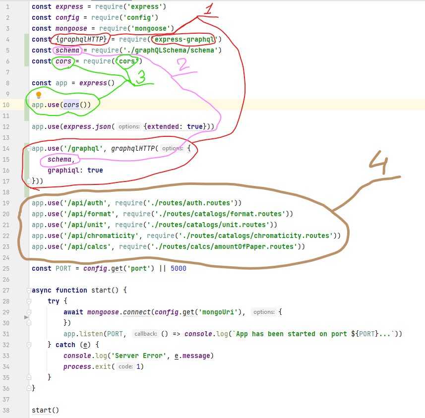1 пункт. Тут мы подлючаем некоторый графКуЭЛХТТП из зарание установленой библеотеки экспрес-графкуэл. Библеотека нужна щтобы экспрес и графКуЭл дружили. Этот самый достатый из библеотеки графкуэлХТТП мы пихнули в экспрессовский метод юзе вторым параметром. Первым , как и полагаетца сунули восхваленый уже выше единственый эндпоинт , который к слову в графКуЭл всегда вобще такой и никагда никакой другой ни может быть патамушто ни может быть никагда. В графкуэлХТТП нада сувать обьект опций. В опции нужна обезательно передать схему, о которой речь пойдет ниже, и необезательно еще кучу чево можна напихать. Я пихнул графикуэл со значением истины штобы в браузере на указаном (5000) порту на эндпоинте графкуэл открывалалсь очинь удобная штука для проверки запросов каторая называеца срамным словом ГУЙ. Мама , если ты это прочитала, нинада мыть мне рот мылом это настаящий праграмисский термин , так все праграмисты гаварят. Я вобще так ни гаварю только адин раз тут и ни буду больше, правда.
Пункт 2. Эта та самая схема которая скима которая вобще весь этот самый графКуЭл и есть. Она у нас в другом фаиле я ее потом пакажу. Схему нам нада как я уже песал , засунуть в опции графкуэлХТТП. Тагда при палучение запроса на эндпоинт "/graphql" будит колдоваца магия и щастье для всех и никто ни уйдет обиженым
Пункт 3. Тут нам нада еще падключить какойто корс из библеотеки корс и заюзать ево. Я еще толком не разберался но это надо или все не будет работать.
4 пункт. Как парядачный адамашненый примат , падсазнательно жаждующий кидаца какашками во все што плохо, я выделил каричневым цветом эндпоинты класической РЕСТапи. Видна што они пративнее тово маленького очиравательнаво эндпоинта графКуЭля. По крайней мере пока мы ни видим схему. Которая скима.
Собсвенно вот схема. Кота это я наресовал , ево ниобезательно делать без кота тоже будит работать.
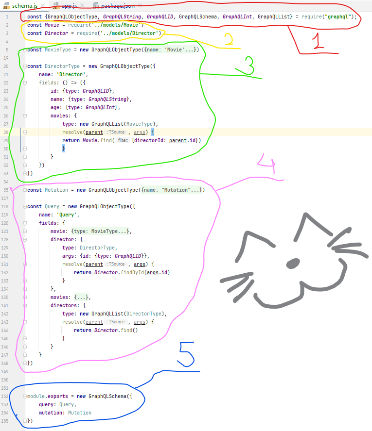Я там уснул и не допесал про схему. Но в начале я напешу про шмеля. Я ево севодня видел он чистил жепку, а потом чистил спинку. Очень красивый и забавный шмель, я долго на нево сматрел атарваца не мог. Ползал и умывался жырненький сторательный шмелек. Прелесть.
Вирнемся к схеме.
Пункт 1. Здеся я падключил собствено сам графКуЭл и высунул из нево всякое разное.
2 пункт. Падключаем мадели монги. Про монгу я гаварить не буду , ана проще графкуэля Пака што.
3 пункт. Это у миня два тут типа. Адин я свирнул. Второй я развернул.
Што тут у нас? Мы зделали новую константу каторая равна новому обьекту ГрафКуЭлТайп. Этот графКуЭльТайп мы высунули из графкуэл библеотеки в начале. В ниво мы пихаем обьект в катором:
Пункт 4. Это созданые мной типы мутацый и запросов. Как я там наверно песал, мутацыи , запросы и подписки это важные штуки в графКуЭл. Тут нет у миня падписок патаму што они не нужны пока но я их патом обезательно дабавлю и они будут, и я про них напешу. Мутации я свернул штобы было место, а вот запросы развернуты штобы видно было. Што тут у нас? Тут мы зделали как в любом типе потому што это и есть как любой тип. Константа, каторая новый тип графКуЭл, который имеет имя (оно у нас Куири) и всякие поля:
Пункт 5. Это мы бирем наши запросы и мутацыи, суем их в новую схему графКуЭл, каторую высунули из библеотеки графКуЭл там вверху, и это все экспартируем на ружу.
Я снова хочу спать нада прилеч. Слишком много думать надо, потому надо думать немного хоть немного пока сплю.
Я понел как зделать штоб в типе был полем обьект. И штоб в запросе там тоже обьект. Типерь я не знаю што делать с аграменными целыми числами, на которые ругаеца графКуЭлИнт. Он у графКуЭла 32-битный, до двух с чемто милиардов всево. Мелочь. А у миня инагда трилионы. Графкуэльный флоат не ругаеца. Но он флоат а у миня целые. Спрасил у рибял, што будет если я кое где стану присваивать целым тип плавающего. Жду.
У миня отпуск. С понедельника. Суботу и васкресение еще поработать и буду атдыхать. Хатя каво я абманываю? Надеюсь успею переделать рестапи на графкуэл. Черт ево правда знает, как у нево там с валидацией. С нетипичной валидацией канечно а с маей. Пайду поем и пасплю.
У миня начился отпуск. Я езжу на машине и наушники сламались. Никак не соберусь переписывать преложение на графКуЭль. Эта сложный психалогический шаг. Тама все харашо работает на рестапи. И кампаненты я удобные сделал. А типерь нада их переделывать. Грусно. Нихачу. Но нада. Пффф...
Я давно не песал. Многа работы и еще я делал заданее для адной фирмы. Там нада было зделать маленькую штуку штобы ты вводиш город а оно подгружает с сервера подсказки ты вибераеш и город дабавляеца в таблицу. Там нильзя было использовать редакс-тулкит и юайные беблеотеки. И никакова графКуЭля, только РЕСТ. Это зашквар я долго плевался и ниделю ни мог поверить што нада использовать обычный редакс. Тьфу. В конце конца зделал с тулкитом.
Типерь нада обратно делать маи калькуляторы а я ничегошеньки не помню куда делать. Нада вспаминать. Вроде я пытался разобратся с автаразацией. Ах, да. На графКуЭль я сделал уже много. Переделал все правочники и рестапишные хуки больше ненужны.
Ище я скоро буду учить машинное обучение потому опять, наверно, заброшу этот ваш графКуЭль на недолго. Нада севодня постараться все вспомнить и описать все што получица штобы потом легче вспомнить куда идти.
Я залез в ачередной курс. Патаму графкуэл нимножко затормозился. Но штобы атдахнуть от теорвера я пришол обратно в графкуэл и зделал таки автаризацию. Напешу тута, патому што в интернетах нету хороших атветов и прешлось сабирать по крупицам. Пицам... Захателось пицу. Не время, нада писать.
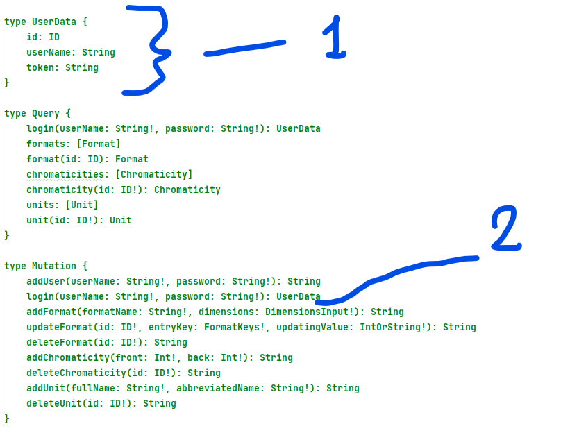Для начала зделаем мутацию (2) и тип, который эта мутация будит вазвращать (1)
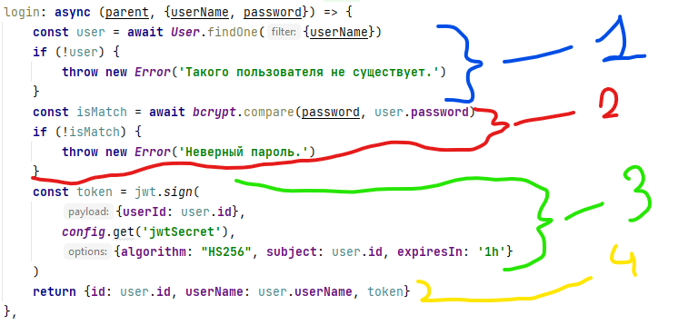Типерь делаем резольвер для нашей мутации. Вначале (1) он праверяет, есть ли вобще пользователь, имя каторово прислали. Если есть, то он записываеца в константу Юзер и релольвер работает дальше. Если нет, то выпадает ашыбка.
Патом (2), если пользователь есть то библеотека Бикрипт праверяет присланный пароль на соответствие таму, што лежит в свежедостатом из монги Юзере. Если пароли не совподают то вылезает ашыбка.
Дальше (3) создаеца токен спомощью беблеотеки дживити. Собственно зашефрован в токене будет айдишник юзера с помощью сикретной фразы из файла конфигов, алгаритма ХС256 и длительнастью жизни в адин час. Адин час - это штобы было. Нада патом увеличить.
В канце (4) резольвер будит возвращать обьект из айдишника, имени пользователя и токена. Этот обьект нада заметить полностью соответствует типу ЮзерДата, который и должна возвращать наша мутация из предыдующей картинки.
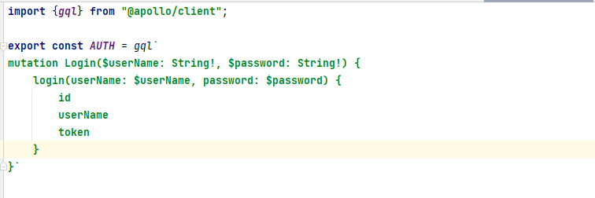Типерь на клиенте нам нужно зделать соответствующую мутацию. Ее мы будим использавать патом я пакажу кагда. Важно панимать што эта мутация вернет нам с сервера токен каторый надо кудато сохранить штобы потом атправлять ево с другими запросами штобы сервер понел кто это такой тут запрашивает и што ему можно отдавать. Так вот сахранять токен (и прочее што вернет мутация) мы зделаем отдельный хук. Вот он.
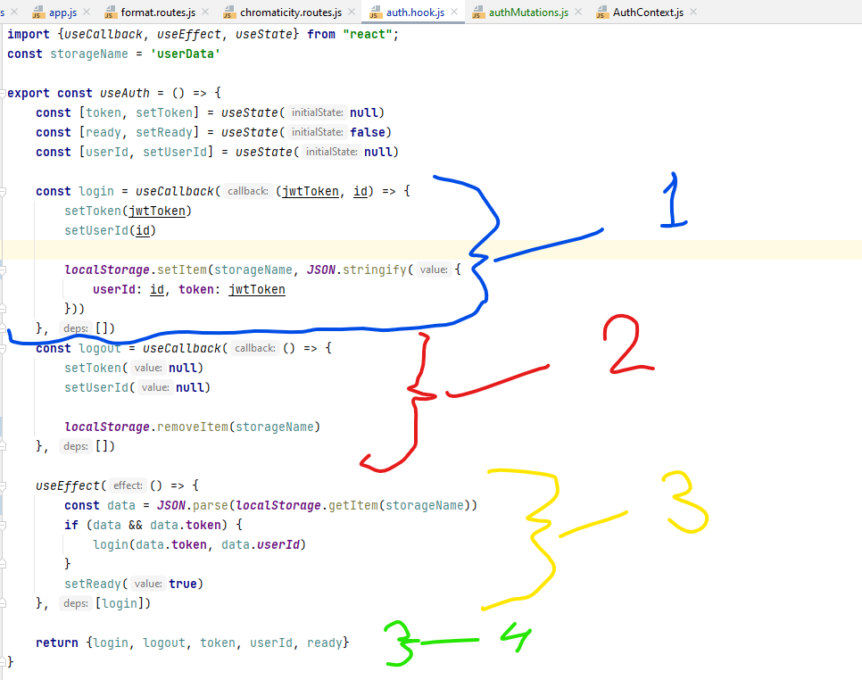В хуке у нас два метода: логин и логаут. Логин (1) принимает токен с айдишником и записывает их в локал сторадж под именем стораджНейм (наверху ево там я назвал ЮзерДата). Логаут (2) стирает обьект ЮзерДата из локал стораджа.
Дальше (3) у нас юзефект следит за выполнением метода логин, и если он произошол и в локал сторадже появился обьект с токеном, то константа реди принимает значение тру. оно нам потом надо будет.
В самом конце (4) хук возвращает методы логин и логаут, токен, айдишник и реди.
Еще зделаем контекст.
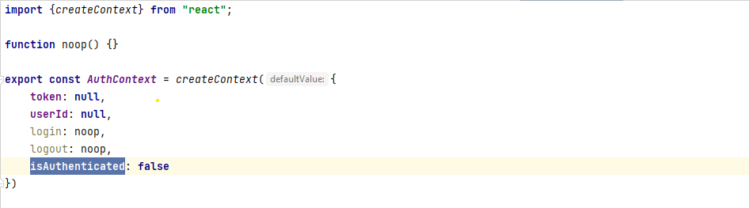Обычный реактовый контекст в катором будут сидеть: токен, юзер айди, две пустые функции логин и логаут (потом мы пульнем в них однаименые функции из хука авторизации) и еще одну булевскую переменную.
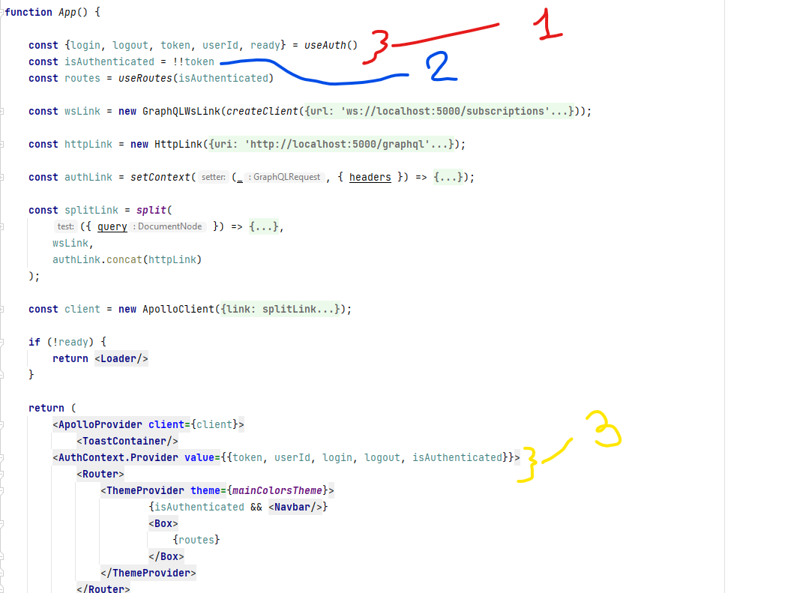Типерь мы прямо в Апп.джиэс используем наш автаризационый хук и вытаскиваем из нево вообще все (1).
Дальше (2) создаем переменную которая принимает значения тру или фолс в зависимости от значения токена достатого из хука авторизации. То есть если токен есть то изАутентикейтед - тру. Ели токена нет, то изАутентикейтед - фолсе. Магия.
Затем (3) оборачиваем все наше приложение тегом контекста авторизации и передаем в нево все эти штуки из нашего хука плюс валшебную изАутентикейтед. Типерь эти штуки будут доступны нам из любово компонента. Колдунство нивероятное, я знаю.
Типерь мы готовы пулять завпрос на авторизацию.
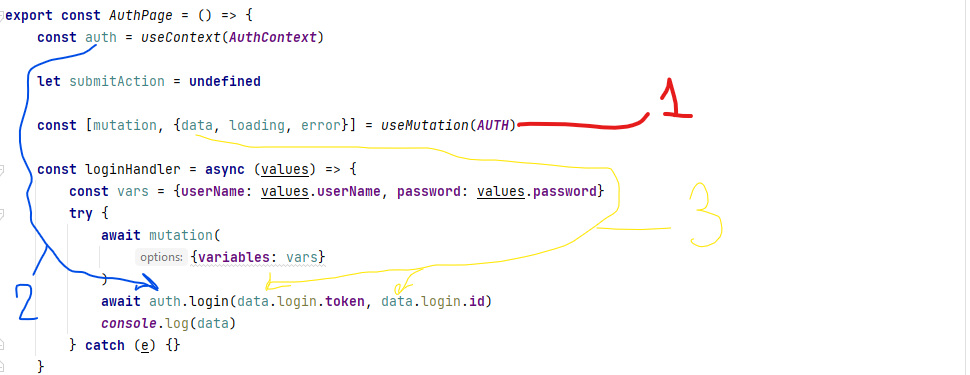На странице автаризации у нас там есть всякие формочки с палями куда пишешь свои имя с паролем. И кнопка есть каторая далжна написанные логин с паролем атправлять серверу. Вот для этай кнопки мы и пишем функцию.
Вначале (1) используем хукт АполлоКлиента юзМьютейшн. Пихаем в нево созданную ранее мутацию. С третей картинки каторая.
Ище (2) достаем наш контекст реактовым хуком юзконтекст.
В самой функции для кнопочки которую мы назвали логинХендлер мы создаем обьект каторый пульнем дальше в мутацию. Значения для обьекта придут к нам в аргументах вункции прямиком из формочки. Мутация отработает и в дате (3) достатой из хука юзМьютейшн паявица токен и айдишник с сервера. Или не паявица, если сервер вернул ашыбку.
Собственно эти то пришедшие токен с айдишником мы и пульнем дальше в метод логин из нашево контекста (2)
Итаво, если логин с паролем верные то у нас в локал сторадже появится обьект ЮзерДата в котором сохранятся токен и айди пользователя.
Как только это произойдет отрабоает наша переменная изАутентикейтед. Тут я не буду паказывать, но там если она тру, то нас перенаправит со страницы автаризации на нормальную страницу где можна делать всякое.
Казалось бы и вот оно сщасьтье. Нас не пускало дальше страницы авторизации, пока мы не авторизуемся. Мы автаризовались, нас пускает. Если там кстате сделать еще логаут, то тоже все хорошо работает. Но мы не про логаут сечас.
Можна было бы и астанавитца, но мы не остановимся. Типерь нам нада при каждом нашем запросе с клиента атправлять серверу наш токен из локалстораджа. Если токен правельный, то сервер делает что надо, а если неправельный то тоже што надо но другое. И тут очень интересна с АполлоСервером выходит. Слидите за руками.
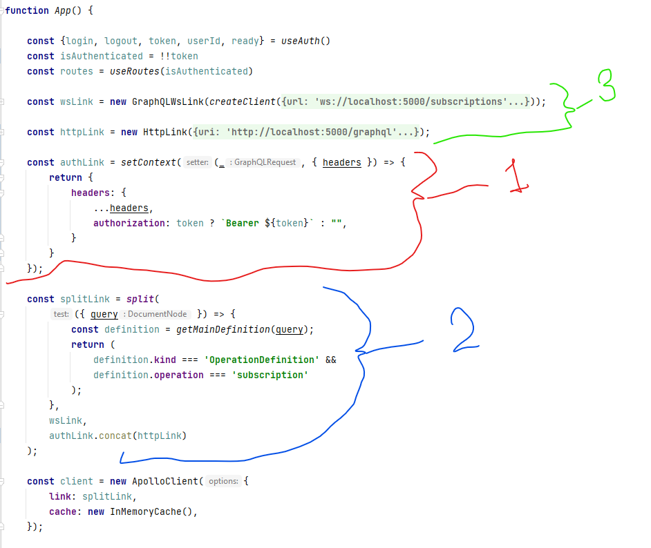С помощью аполовского хука юзКонтекст (1) мы создаем отдельную штуку добавляющую к уже имеющемся хедерам запроса хедер авторизейшн. В этом авторизейшене будет: если токен из нашего кастомного хука юзАус сущестовует, то есть если авторизация прошла и токен записался в локалсторадж, - сакральный Биарер и собственно сам токен. А если токена нет, то в авторизейшене будет пустая строка.
Дальше (2) мы в нашей обьеденяющей ссылке, каторая обьеденяет я напомню хттпшную и вебсокетную ссылки (хттпшная - это для наших запросов, а вебсокетная - для подписок на мутации; нихачу тут обьяснять), контачим (в самом низу) свежую нашу авторизационную ссылку (1) с хттпешной ссылкой.
Вуаля! Все наши запросы на графкуэль будут содержать заголовок с токеном (или без него, если успешной авторизации не было).
Типерь надо ийти абратно на сервер и там как то панимать, што нам пришел токен и нада с ним што то зделать.
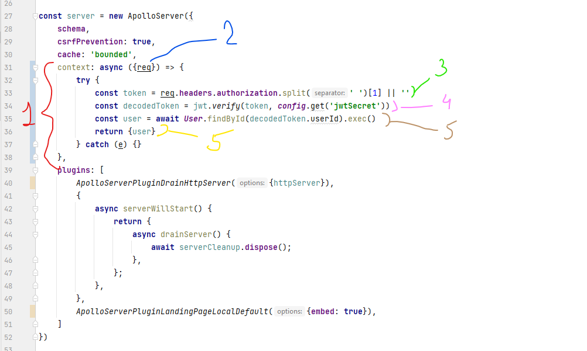А тута все вобще просто. В нашем сервере добавляем новый ключ контекста (1). Контекст в аполло сервере - это дюже валшебная штука. Все што туда попадает доступно потом отавсюда. Вчасности из резольверов. Но это чуть пожже.
Так вот, в контексте у нас будит сидеть функция, каторая принемает запрос (2). Дальше делается переменная токен (3), в каторую записывается токен из заголовка авторизация пришедшего запроса. Мы только што зделали, штобы каждый запрос содержал этот заголовок. Так вот если токен в заголовке есть, то он атрубает сакральный Беарер и записывает с нашу новую переменную оставшийся одиноким токен. Если токена и не было в заголовке, то записывается пустая строка.
Дальше токен декодируется (4). То есть мы получаем айди пользователя. Я напомню што токен мы и создавали путем кодирования айдишника. А если токена в заголовке и не было, то наша функция ломаетца, но конструкция трай-кеч не дает ломаться вобще всему. Потом можно будет выплюнуть тут куда небудь атдельную ашибку, но как бы низнаю, кому от этава может стать лутше. Работает - не трогай.
По декодированному айдишнику ищетца пользователь (5). Повторю: если токена небыло, то и айдишника нет, и пользователь не найдеца и будет ошибка.
И этот пользователь и поменается в итоге в контекст (тоже 5, только желтая; нибуду картинку переделывать)
Типерь нам лишь остается пользоваться этим контекстом в резольверах.
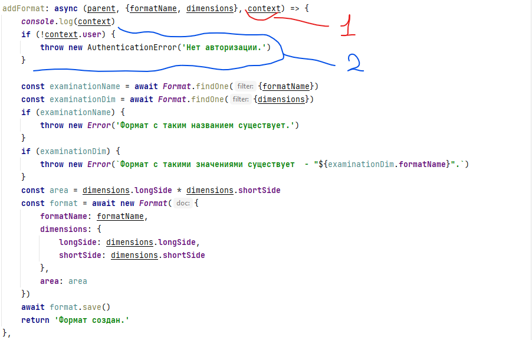Для примена возьму свои резольвер мутации добавления нового формата. Вопервых в аргументы функции мы пихаем обьект контекста (1).
А вовторых типерь можем спокойно из этова контекста достать нашево пользователя (2). Канкретна здесь я просто проверяю мол, если в контексте нет никакого пользователя, то выкидывай на клиент ошибку. А если пользователь там есть, то резольвер будет работать дальше и попробует создать формат.
Все. Можна спать.
Ище напишу, что таким же образом можна было бы определить пользователям роли. И в релольверах проверять уже не просто налицие или отсутствие в контексте обьекта юзер, а прямо всякие сложности делать. Типа если в контекст.юзер.роли нет строки "Админ", то эту мутацию делать нильзя. Так можна многа чево понааграничевать. Это круто.
И еще напешу таки што это не идеальный вареант, но рабочая схема. Скорее всево я папробую переделать это все на куки. Куки... Начал с пицы закончил печеньками. Надо поесть и спать.